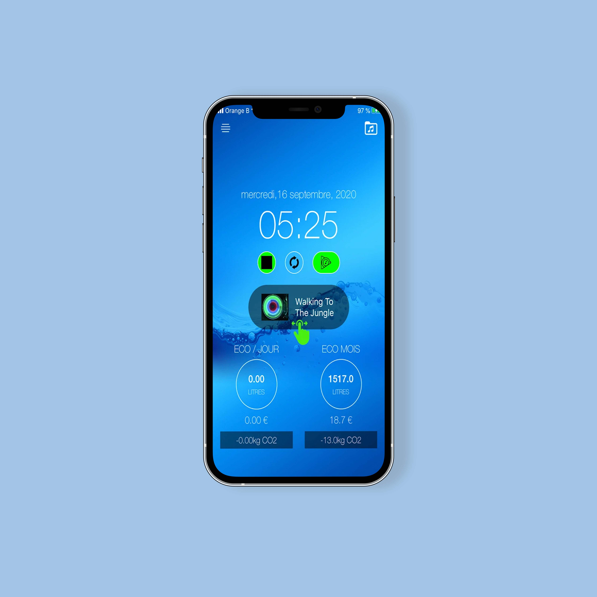
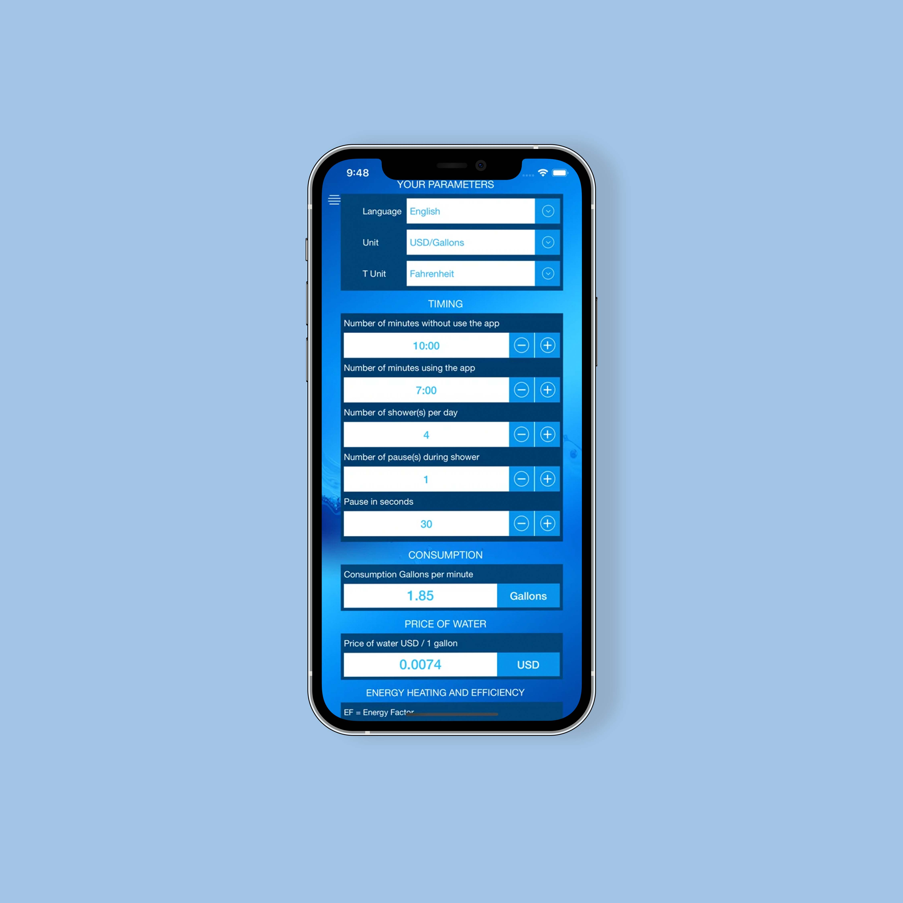

<div id="ajax-page" class="ajax-page-content">
  <div class="ajax-page-wrapper">
    <div class="ajax-page-nav">
      <div class="nav-item ajax-page-prev-next">
        <a class="ajax-page-load" href="project-8.html"
          ><i class="lnr lnr-chevron-left"></i
        ></a>
        <a class="ajax-page-load" href="project-10.html"
          ><i class="lnr lnr-chevron-right"></i
        ></a>
      </div>
      <div class="nav-item ajax-page-close-button">
        <a id="ajax-page-close-button" href="index.html#portfolio"
          ><i class="lnr lnr-cross"></i
        ></a>
      </div>
    </div>

    <div class="page-title">
      <h1>ShowerTimer.world</h1>
    </div>

    <div class="row">
      <div class="col-sm-8 col-md-8 portfolio-block">
        <div class="owl-carousel portfolio-page-carousel">
          <div class="item">
            
          </div>
          <div class="item">
            
          </div>
          <div class="item">
            
          </div>
        </div>

        <script type="text/javascript">
          jQuery(document).ready(function ($) {
            $(".portfolio-page-carousel").imagesLoaded(function () {
              $(".portfolio-page-carousel").owlCarousel({
                smartSpeed: 1200,
                items: 1,
                loop: true,
                dots: true,
                nav: true,
                navText: false,
                margin: 10,
                autoHeight: true,
              });
            });
          });
        </script>
      </div>

      <div class="col-sm-4 col-md-4 portfolio-block">
        <!-- Project Description -->
        <div class="project-description">
          <div class="block-title">
            <h3>Description</h3>
          </div>

          <p class="text-justify">
            "Showertimer.world" is the first application on the Apple Store to
            offer a sophisticated shower timer. Launched in 2018 for Europe and
            the United States, we want to extend its operation for all users
            around the world.
          </p>
          <p class="text-justify">
            It integrates a very precise calculation module with more than 40
            parameters. Decreasing your shower time will save your money, but
            will also reduce your carbon impact! Designed for easy and daily
            use, use in humid environments is secured to avoid any risk of
            electric shock.
          </p>
          <p class="text-justify">
            AVAILABLE FOR THE DEAFS AND HARD EARING. ACTIVATE THE FLASH
            NOTIFICATION. MUTLI-LINGUAL SUPPORT (Français, English, Deutch,
            Nederlands, Italiano, Spanish and many more.).
          </p>
          <!-- /Project Description -->
          <div class="">
            <a
              href="https://apps.apple.com/in/app/showertimer-world/id1439921463"
              target="_blank"
            >
              
            </a>
          </div>
          <!-- Technology -->
          <div class="tags-block">
            <div class="block-title">
              <h3>Technology</h3>
            </div>
            <ul class="tags">
              <li><a>swift</a></li>
              <li><a>firebase</a></li>
              <li><a>localization</a></li>
              <li><a>bar chart</a></li>
              <li><a>avfoundation</a></li>
            </ul>
          </div>
          <!-- /Technology -->
        </div>
        <!-- Project Description -->
      </div>
    </div>
  </div>
</div>
